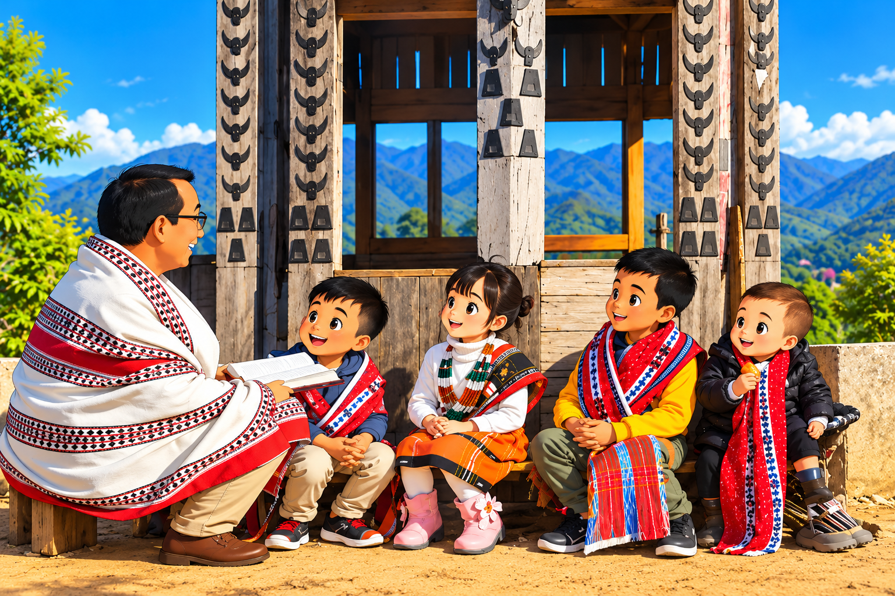

01
Language
The Tangkhul language is an important part of our identity and cultural heritage. The Tangkhul people are known for having over 100 village dialects. Because historical isolation caused each village to develop its own unique speech, neighboring villages understand each other easily, while dialects from more distant villages can be mutually unintelligible.
Explore Language →